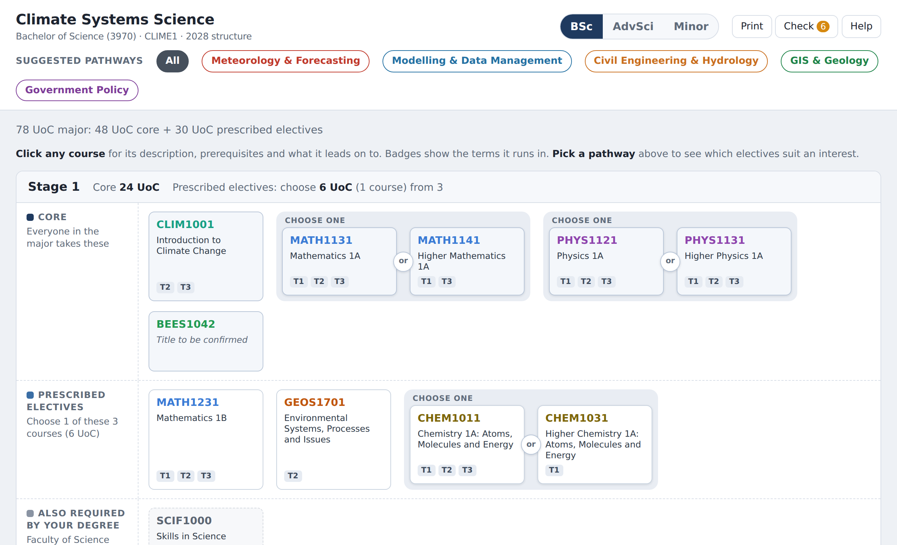
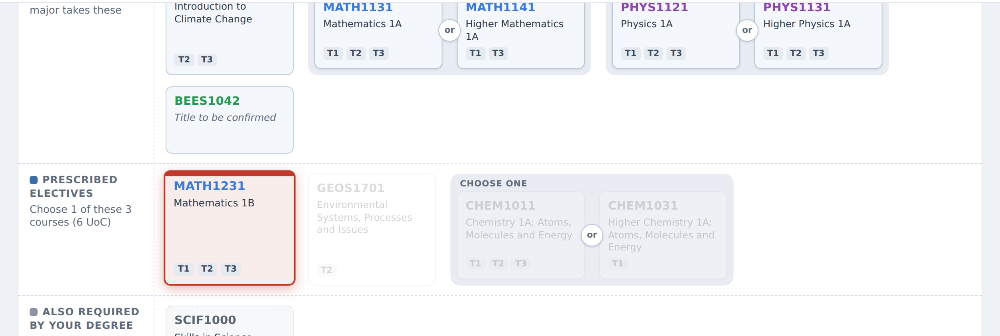
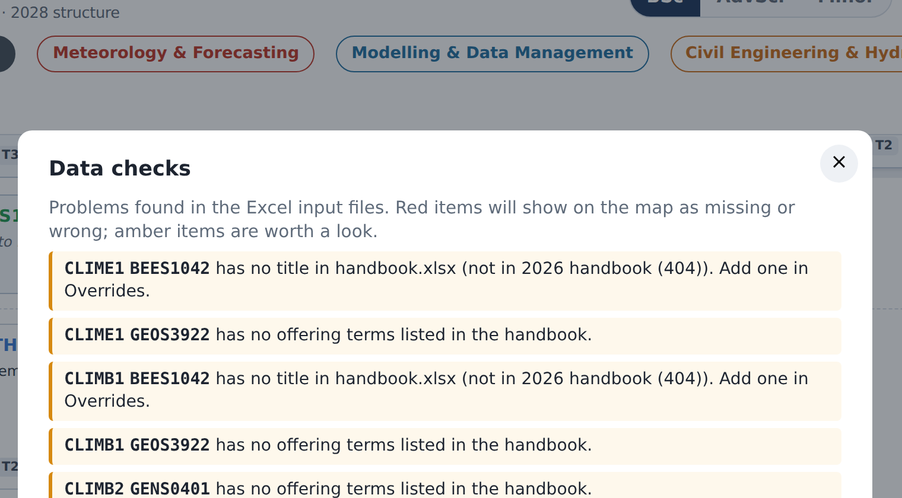

How to keep the interactive course map up to date: change a program, add a pathway, add a new major, refresh the handbook details. No coding needed.
The course map is a web page that shows students how a major is built: which courses are core, which electives they choose from, how many they need, and which courses lead to which. Students can click a course to see its description, prerequisites and handbook link, and can pick a "pathway" to see which electives suit an interest such as meteorology or policy.

Everything the page shows comes from a handful of Excel files sitting next to it. To change the map, you change a spreadsheet. The page reads the spreadsheets fresh every time it loads, so there is no "publish" step beyond saving the file (and copying the folder to the website, see section 10).
| File | What it is | Who edits it |
|---|---|---|
course_map.html | The web page itself. | Nobody (unless changing the design) |
lib/xlsx.full.min.js | A helper that lets the page read Excel files. | Nobody |
programs.xlsx | The list of programs to show, and site-wide text such as the feedback email. | You, when adding a program |
CLIME1_bsc.xlsxCLIMB1_advsci.xlsxCLIMB2_minor.xlsx | One workbook per program: its stages, core courses, elective pools and pathways. These are the files you will edit most. | You |
handbook.xlsx | Course titles, terms offered, prerequisites and handbook links, copied from the UNSW Handbook by the scraper. Has an Overrides sheet for hand corrections. | The scraper writes it; you edit only the Overrides sheet |
scrape_handbook.pyrequirements.txt | The scraper: a small program that refreshes handbook.xlsx from the Handbook, and the list of packages it needs. | Nobody; you just run it |
README.md | A shorter version of this guide, in plain text. | Keep it in step with this guide |
Think of it as two separate kinds of information:
handbook.xlsx and is fetched automatically. You never type it, except for corrections in Overrides.CLIM2001. A space or a lower-case letter means the page won't recognise it..xlsx). Don't change the file names unless you also change them in programs.xlsx.Open the program's workbook (for example CLIME1_bsc.xlsx for the BSc). It has four sheets.
Two columns, Setting and Value. Only change the Value column.
| Setting | Value | Meaning |
|---|---|---|
| Name | Climate Systems Science | The major's name |
| Degree | Bachelor of Science | Shown under the title |
| Program code | 3970 | UNSW program number |
| Plan code | CLIME1 | UNSW plan / specialisation code |
| Structure year | 2028 | The year this structure applies from; shown in the footer |
| Layout | stages | stages for a major (rows per year), pool for a minor (one list of courses) |
| Subtitle | 78 UoC major: 48 UoC core + 30 UoC prescribed electives | One line under the header |
| Handbook link | https://www.handbook.unsw.edu.au/... | "Official handbook entry" link in the footer |
| Honours note | Stage 4 is a 48 UoC Honours year... | Text shown for an Honours stage (Advanced Science only) |
| Note | The major is 78 UoC of the 144 UoC degree... | Shown under the map. Add as many Note rows as you like. |
| Stage | Label | Core UoC | Elective UoC | Note |
|---|---|---|---|---|
| 1 | Stage 1 | 24 | 6 | |
| 2 | Stage 2 | 12 | 12 | |
| 3 | Stage 3 | 12 | 12 | |
| 4 | Honours | 48 | 0 | HONOURS |
Elective UoC is what students must choose from that stage's elective pool. The page turns it into "choose 12 UoC (2 courses) from 9". Writing HONOURS in the Note column shows that stage as a text box (using the Honours note from the Program sheet) instead of course tiles.
One row per requirement. This is where you add and remove courses.
| Stage | Type | Course | Alternative 1 | Alternative 2 | Display label | Link | Note |
|---|---|---|---|---|---|---|---|
| 1 | Core | CLIM1001 | |||||
| 1 | Core | MATH1131 | MATH1141 | Maths 1A or Higher Maths 1A | |||
| 1 | Elective | CHEM1011 | CHEM1031 | ||||
| 1 | Degree | SCIF1000 | Faculty of Science core | ||||
| 2 | Core | CLIM2001 / PHYS2801 | |||||
| 2 | Degree | WIL/RIL | Employability elective (WIL/RIL), 6 UoC | https://www.unsw.edu.au/science/... |
Core (everyone does it), Elective (one option in that stage's elective pool), or Degree (something the degree requires that is not part of the major, such as the SCIF courses; shown in grey).CLIM2001 / PHYS2801.Pathways are the coloured buttons at the top ("Meteorology & Forecasting", "Government Policy"...). They are advice, not rules: clicking one highlights the electives that suit that interest and fades the rest. They live in the Streams sheet of the program workbook, one row per pathway.
| Stream | Colour | Description | Course 1 | Course 2 | Course 3 | Course 4 | Course 5 | ... |
|---|---|---|---|---|---|---|---|---|
| Meteorology & Forecasting | #c0392b | Atmospheric dynamics and weather prediction; maths-heavy | MATH1231 | MATH2011 | MATH2241 | MATH3201 | MATH3261 | |
| Government Policy | #7d3c98 | Climate risk, energy transition and environmental management | GEOS1701 | BEES2041 | GEOS2241 | GEOS3761 | GEOS3922 |
#2471a3. Any web colour picker will give you one. Pick colours that are easy to tell apart.
Two situations. A new program of an existing major (say, the Climate minor was added alongside the BSc and AdvSci) becomes another button next to BSc / AdvSci / Minor. A new major altogether (say, Geology, or Marine Science) gets its own entry in a drop-down list at the top of the page; the drop-down only appears once there is more than one major.
Either way the steps are the same:
GEOSA1_bsc.xlsx. Copy the one closest to what you need: a BSc major from CLIME1_bsc.xlsx, a minor from CLIMB2_minor.xlsx.programs.xlsx, sheet Programs:| File | Major | Button label | Show |
|---|---|---|---|
| CLIME1_bsc.xlsx | Climate Systems Science | BSc | yes |
| CLIMB1_advsci.xlsx | Climate Systems Science | AdvSci | yes |
| CLIMB2_minor.xlsx | Climate Systems Science | Minor | yes |
| GEOSA1_bsc.xlsx | Geology | BSc | yes |
yes to show it, no to hide it while you're still working on it. Handy for drafting a new major without students seeing it.The Settings sheet of programs.xlsx holds text that applies to every program: the site title shown above the drop-down, the feedback email, the "suggested pathways" wording, and the myPlan and WIL links.
handbook.xlsx is where the page gets each course's title, the terms it runs in, its prerequisites and exclusions, and its handbook link. You don't type any of this. The scraper (scrape_handbook.py) fills it in by reading the UNSW Handbook website.
It reads programs.xlsx to find the program workbooks, then collects every course code in the Course, Alternative and Stream columns of all of them. So you never give it a list: if a course is on any map, it gets fetched. Codes mentioned only in a Note column are ignored.
You do not need to run it after moving courses between stages, changing pathways, changing UoC numbers, or editing notes. Those come straight from the program workbooks.
You need Python 3 on your computer and normal internet access (the UNSW network is fine). Open a terminal (Mac: Terminal app; Windows: Command Prompt or PowerShell) in the course map folder.
First time only, install the packages it needs:
pip install -r requirements.txt
If pip is not found, try pip3 or python3 -m pip.
Each time:
python scrape_handbook.py
It prints one line per course as it goes and finishes with a summary of anything it couldn't find. It takes about a minute. Other useful forms:
python scrape_handbook.py --year 2027 # a particular handbook year python scrape_handbook.py --dry-run # just list the codes it would fetch
Without --year it uses the newest handbook year that exists. The year it used is written into the Info sheet of handbook.xlsx and shown in the page footer.
handbook.xlsx every time. Never type into those two sheets; anything you put there is lost on the next run. Corrections go in Overrides (next section), which the scraper never touches.Sometimes the Handbook is wrong, out of date, or doesn't have a course yet (a brand-new course, or a code that is changing next year). The Overrides sheet in handbook.xlsx is for this.
It has the same columns as the Courses sheet. The rule is simple: any cell you fill in here replaces the scraped value for that course. Blank cells are ignored. So you only fill in what you want to change.
| Code | Title | UoC | Terms | Prerequisites | ... | Error |
|---|---|---|---|---|---|---|
| BEES1042 | (the new course’s title) | 6 | Term 1 | |||
| GEOS3922 | Term 2 |
In this example, BEES1042 is a new course not yet in the Handbook, so its title, UoC and term are all typed in by hand. GEOS3922 is in the Handbook but has no term listed, so only Terms is filled in; its title and everything else still come from the scrape.
Term 1, Term 2 (with commas). From 2028 this will be semesters; use whatever the Handbook uses.Press the Check button in the page header after any edit. It reads all the files and lists anything that doesn't add up.

Typical messages and what to do:
| Message | What to do |
|---|---|
| "...is in the Structure sheet but not in handbook.xlsx" | Run the scraper, or if the course isn't in the Handbook yet, add it to Overrides. |
| "...has no title in handbook.xlsx" | The scraper couldn't find it. Check the code is right; if it's a new course, put a title in Overrides. |
| "...has no offering terms listed" | Usually the Handbook hasn't published them yet. Ignore, or add them in Overrides if you know them. |
| "Stream ... lists X, which is not on this program's map" | Either add X to the Structure sheet as an Elective, or remove it from the pathway. |
| "Stream ... lists X, which is a core course" | Remove it from the pathway; core courses are compulsory anyway. |
| "Core UoC is 24 in the Stages sheet but the core rows add up to 30" | Fix whichever is wrong. |
| "...must choose 12 UoC of electives but the pool only has 6 UoC" | Add electives or reduce Elective UoC. |
The count on the Check button goes red when there is at least one real problem and amber when there are only warnings. Aim for zero before the page goes live.
Web browsers won't let a page read spreadsheets straight from your disk, so double-clicking course_map.html shows an error. Instead, open a terminal in the folder and run:
python -m http.server
then go to http://localhost:8000/course_map.html in your browser. Leave the terminal window open while you look. Every time you save a spreadsheet, just reload the page.
The live page is simply this folder copied to the website. Copy the whole folder (including lib/) so the spreadsheets sit next to the page. How the copy happens depends on the site; at the time of writing the folder lives in the teaching/bees_course_maps/ part of Alex Sen Gupta's site and is pushed with the rest of it.
The web address remembers which program (and pathway) is showing, so you can link straight to one: course_map.html#CLIME1_bsc opens on the BSc. The part after # is the workbook's file name without .xlsx.
The Print button gives a one-page landscape summary of the program on screen, for handbooks and induction slides.
| What you see | Likely cause and fix |
|---|---|
| "Could not load the course map" | The page was opened by double-clicking, or a file it needs is missing or misnamed. Use the local server (section 10) and check that programs.xlsx, the workbooks it lists and handbook.xlsx are all in the same folder as the page. |
| A program has disappeared | Its row in programs.xlsx has Show = no, or its file name doesn't match. |
| A course shows "Title to be confirmed" | It isn't in handbook.xlsx. Run the scraper, or add it to Overrides. |
| A course tile is missing altogether | The code is mistyped (must be four capital letters + four digits), its Stage doesn't match the Stages sheet, or its Type isn't exactly Core, Elective or Degree. |
| "Choose one" group not appearing | The alternatives must be in the Alternative columns, not in the Course cell with a slash. A slash means co-badged (same course, two codes), not a choice. |
| The scraper says "not in 2027 handbook" for a course | Either the code is wrong, or the course is new. New courses go in Overrides until the Handbook lists them. |
| The scraper won't run at all | Check Python is installed (python --version) and the packages are installed (pip install -r requirements.txt). Some university networks block scripts from fetching web pages; try from home or on Wi-Fi. |
| Changes don't show after saving | Make sure you saved as .xlsx in the same folder, then do a hard reload of the page (Cmd+Shift+R on Mac, Ctrl+Shift+R on Windows). |
BEES Course Maps guide, version 1, September 2026. For questions about the Climate Systems Science content contact Alex Sen Gupta (a.sengupta@unsw.edu.au).